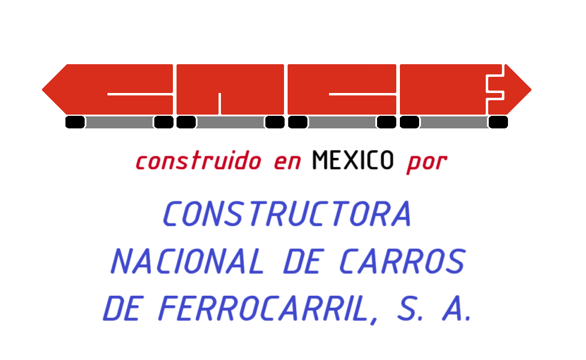

Neumático Mexicano 1973
El NM-73 (Neumático Mexicano 1973) es el segundo modelo de tren sobre neumáticos del Metro de la Ciudad de México. Diseñado y construido por Concarril (hoy Bombardier Transportation México) en México con asistencia técnica de Alstom. En total son 44 trenes, 29 formados de seis unidades y 15 de nueve unidades. Circulan por las líneas 4, 5, 6, y 7 del Metro de la Ciudad de México.
